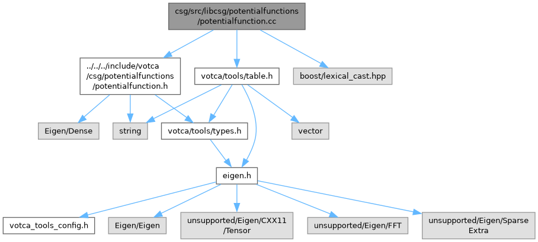

Votca
1.4-dev
Main Page
Related Pages
Namespaces
Classes
Files
File List
File Members
csg/src/libcsg/potentialfunctions/potentialfunction.cc File Reference
#include <
votca/csg/potentialfunctions/potentialfunction.h
>
Include dependency graph for potentialfunction.cc:

Go to the source code of this file.